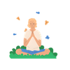

Atención en un mundo de distracciones
Aprende cómo funciona tu atención, el coste real del multitasking y las herramientas para crear condiciones de foco sostenido.
- Cómo funciona la atención y el residuo de context switching
- Las dos redes cerebrales y por qué compiten
- Slack y la economía de la atención
- El ritual de inicio para deep work
- Pair programming consciente
- Respiración de 3 min para reiniciar la mente
- Single Tab Mind: 10 min de foco total
- Check-in mental al inicio del día (1 min)
- Registro de interrupciones durante 24 horas
El coste real del multitasking
2 min · Video + registro
¿Cuántas pestañas tienes abiertas ahora mismo?
No es una pregunta retórica. Es el punto de partida de este módulo. Vivimos convencidos de que hacer varias cosas a la vez nos hace más productivos. La neurociencia dice lo contrario.
El residuo de atención
Cuando cambias de tarea, tu cerebro no hace dos cosas a la vez: las hace en serie, muy rápido, pagando un coste en cada cambio. Ese coste se llama residuo de atención y se acumula durante todo el día.
Los trabajadores del conocimiento cambian de tarea de media cada 40 segundos. El coste de recuperar el foco tras una interrupción: entre 10 y 23 minutos.
Registro de interrupciones
Durante las próximas 24 horas, cada vez que cambies de tarea sin haberla terminado, anótalo. Solo observar ya cambia el comportamiento.
Cómo funciona la atención
2 min · Video
Dos modos que compiten
Tu cerebro tiene dos modos de funcionamiento. La red de tarea positiva — el modo enfocado — y la red neuronal por defecto — el modo mente errante. No pueden estar activos al mismo tiempo.
Red de tarea positiva
El modo enfocado. El que usas cuando resuelves un problema concreto. El que necesitas para programar, diseñar o analizar.
Red neuronal por defecto
El modo mente errante. Se activa cuando no estás haciendo nada concreto. Genera pensamientos espontáneos, planifica, recuerda, divaga.
El problema es que estos dos modos no pueden estar activos al mismo tiempo. Cuando uno sube, el otro baja.
— Mindfulness TechCada notificación activa brevemente la red por defecto. Tu cerebro sale del modo enfocado, procesa el estímulo, e intenta volver. Ese intento de vuelta cuesta entre 10 y 23 minutos.
Tu primera práctica de mindfulness
3 min · Audio guiado
No necesitas experiencia previa. Solo necesitas estar aquí, en esta silla, durante tres minutos.
Una definición práctica
Notar cuando la mente se fue y traerla de vuelta. Una y otra vez. Sin tensión. Eso es todo. No es vaciar la mente — es observarla.
Slack y la economía de la atención
2 min · Video + ejercicio
Slack no está diseñado para tu productividad
Está diseñado para tu engagement. Cada notificación activa un pequeño pico de dopamina. Tu cerebro aprende que revisar el Slack puede traer algo nuevo y empieza a pedirlo aunque no haya nada.
Modo streaming — el problema
Revisar mensajes de forma continua, en tiempo real, reaccionando a cada estímulo. Resultado: entre 20 y 30 revisiones por hora sin haberlo decidido.
Modo batch — la solución
Definir 2–3 ventanas de tiempo para revisar mensajes. Fuera de esas ventanas, notificaciones silenciadas.
Mindfulness para deep work
5 min · Audio + plantilla
Las condiciones del deep work
Hay dos condiciones externas: un bloque de tiempo sin interrupciones y un entorno con menos distracciones. Pero hay una condición interna que se suele ignorar: llegar con la mente preparada.
Cierra las pestañas que no necesitas. Silencia las notificaciones. Pon el teléfono boca abajo.
Una respiración consciente antes de empezar. Solo una. Para marcar el cambio.
¿Qué quieres haber completado al final de este bloque? No la lista entera. Una sola cosa.

¿Por qué funciona?
Cuando el cerebro sabe exactamente qué tiene que hacer, el trabajo de entrar en foco se reduce drásticamente. La mente errante tiene menos donde agarrarse.
Pair programming consciente
3 min · Video + práctica
La exigencia cognitiva del pair
El pair programming es una de las prácticas más exigentes que existe en el trabajo tech. No solo porque estás programando, sino porque estás programando mientras escuchas, explicas, recibes feedback y gestionas la dinámica.
Error del driver
Está tan metido en el código que no explica lo que hace. El navigator se pierde y la sesión pierde calidad.
Error del navigator
Está tan pendiente de lo siguiente que no está presente en lo que pasa ahora. El pair se convierte en trabajo en paralelo, no en colaboración.
Ambos son problemas de atención, no de habilidad técnica.
— Mindfulness TechAntes de tu próxima sesión de pair, dedica 60 segundos a alinearte. No el backlog. No el ticket. Sino: ¿cómo está cada uno hoy? ¿Qué nivel de energía tiene? ¿Hay algo que pueda afectar la sesión?
Recapitulación e integración
3 min · Ejercicio guiado
Lo que aprendiste esta semana
Cómo funciona la atención. El coste real del multitasking. Cómo las notificaciones interrumpen el foco. Y tu primera práctica de respiración consciente.
La mente que regresa no es una mente débil. Es una mente entrenada.
— Mindfulness TechNos vemos en el módulo 2
La semana que viene: regulación del estrés en entornos tech. Deadlines, bugs en producción, code reviews y cómo no perder el hilo.
Módulo 1 completado
Has recorrido todas las sesiones de Atención en un mundo de distracciones. Puedes volver a cualquier sesión cuando lo necesites.